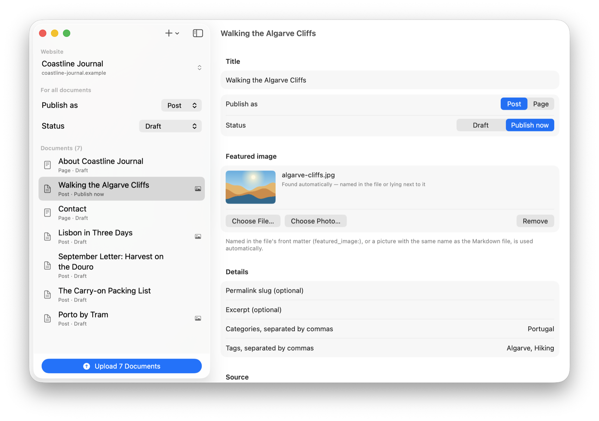
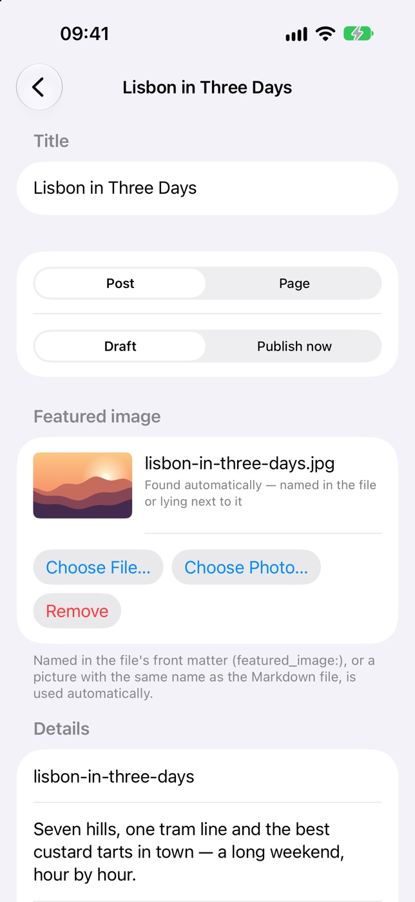

Schritt 1
Dateien hinzufügen. Oder gleich den Ordner.
Einzelne Dateien wählen, einen Ordner samt Unterordnern oder alles ins Fenster ziehen. Den Titel liest AutoPress aus dem Front Matter, der ersten Überschrift oder dem Dateinamen.

Für iPhone, iPad und Mac
Hybrid AutoPress lädt viele Markdown-Dateien auf einmal zu WordPress hoch. Aus jeder Datei wird ein Beitrag oder eine Seite, mit Überschriften, Links, Listen, Tabellen und Bildern, als Entwurf oder sofort veröffentlicht.
Schritt 1
Einzelne Dateien wählen, einen Ordner samt Unterordnern oder alles ins Fenster ziehen. Den Titel liest AutoPress aus dem Front Matter, der ersten Überschrift oder dem Dateinamen.
Schritt 2
Beitrag oder Seite, Entwurf oder live: einmal für alle Dokumente einstellen und bei jedem einzelnen abweichen. Bevor etwas sofort veröffentlicht wird, fragt AutoPress ein Mal nach.

Schritt 3
Ein Dokument nach dem anderen entsteht in WordPress, die Bilder zuerst. Ein Fortschrittsbalken zeigt, wie weit du bist, und anhalten geht jederzeit.

Schritt 4
Jedes fertige Dokument bekommt einen grünen Haken und einen Link zur Ansicht auf der Website oder zum Weiterbearbeiten in WordPress. Geht etwas schief, sagt AutoPress, woran es liegt und was hilft.

Bilder
Schluss mit Bildern von Hand hochladen und Links flicken. Was neben der Markdown-Datei liegt, kommt mit ihr in WordPress an.

Eine App, drei Geräte
Dieselbe App auf iPhone, iPad und Mac. Lade von dort hoch, wo deine Dateien liegen: iCloud Drive, die Dateien-App oder ein Ordner auf dem Mac.


Front Matter
Optionales Front Matter steuert alles pro Datei. Ohne wird die erste Überschrift zum Titel und steht dann nicht doppelt im Beitrag.
--- # optional: jede Zeile darf fehlen title: Lisbon in Three Days type: post status: draft slug: lisbon-in-three-days tags: Lisbon, City trips, Food categories: Portugal featured_image: lisbon.jpg --- # Lisbon in Three Days Lisbon rewards people who walk … 
Dein WordPress
Im Browser anmelden, und WordPress legt selbst ein Anwendungspasswort für die App an. Oder du trägst eines von Hand ein. Die REST-API wird automatisch gefunden. Websites bei WordPress.com verbindest du per Anmeldung im Browser.
Nie in den Einstellungen, nie in einer Datei. Und nur über https: Über eine unverschlüsselte Verbindung werden keine Zugangsdaten gesendet.
Verschluckt dein Server den Authorization-Header, was bei Shared Hosting häufig vorkommt, erkennt AutoPress das und zeigt die passende .htaccess-Zeile.
Kein Konto nötig, kein Tracking, kein Server dazwischen. Die App redet direkt mit deinem WordPress.
Was du davon hast
Zwanzig Artikel heißen nicht mehr zwanzigmal kopieren, einfügen, Bilder hochladen, Links reparieren. Ordner hinzufügen, hochladen.
Alles kann als Entwurf ankommen. In WordPress prüfen und veröffentlichen, wenn es passt.
Die Markdown-Dateien auf deiner Festplatte bleiben das Original, lesbar in jedem Editor, heute und in zehn Jahren.
Texte aus ChatGPT, Claude und Co. kommen ohnehin als Markdown. AutoPress bringt sie ohne Umwege auf deine Website.
Umzug oder Neustart? Seiten und Beiträge gehen in einem Durchgang hoch, samt Schlagwörtern und Kategorien.
Hybrid AutoPress kommt in den App Store: eine App für iPhone, iPad und Mac.
Benötigt iOS 17, iPadOS 17 oder macOS 14 · Englisch und Deutsch